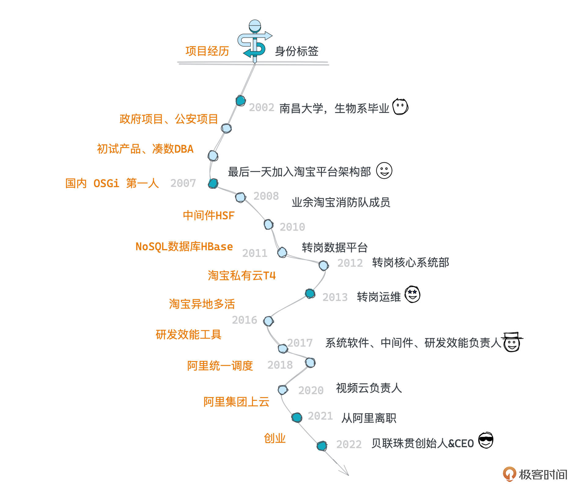
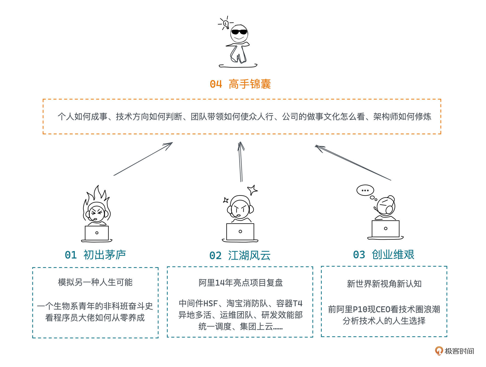

- 01 小厂项目：做程序员不难，难的是做职业程序员.md
- 02 小厂创业：做出一个产品，卖给所有人.md
- 03 淘宝HSF：能让淘宝出重大故障的就那批人.md
- 04 淘宝消防队：真正最优秀的程序员不应该是英雄.md
- 05 HBase_T4：Leader最重要的，说白了是要赌未来.md
- 06 异地多活：技术圈子的人，见过猪跑很重要.md
- 07 运维团队：我能干，只是我不想干而已.md
- 08 基础团队：研发效能部门，解决不了研发效能问题.md
- 09 统一调度：只是问题非常多而已，摔出来就行了.md
- 10 出走大厂：离职？还是不离职？这是一个问题.md
- 11 CEO心得：大厂出来创业，最大问题是对钱没概念.md
- 团队：在人身上，你到底愿意花多大精力？.md
- 开篇词 这一次，我们来采访毕玄.md
- 成事：技术人最大的问题就是情怀化.md
- 文化：你所在的团队，有多少人敢讲真话？.md
- 方向：技术演进，到底该怎么思考未来？.md
- 架构：架构师只是个角色，不是个岗位.md
- 番外：一位险些没上得了大学的青年，如何开启计算机征程.md
开篇词 这一次，我们来采访毕玄
你好，非常高兴能和你在《超级访谈：对话毕玄》专栏见面，我是编辑叶芊。
你是不是很好奇，为什么这次要和毕玄对谈？答案很简单，因为这个人有一份神奇到独一档的职业经历。
2002年大学生物系毕业后，他成为了一名做政府项目的小程序员，在小厂辗转了五年。到这里，看起来还没有什么太独特的，就是一个普通的非科班程序员。
但就在小厂的第五年，他被称为国内 OSGi 第一人，07年年底顺势加入淘宝后，就开启了自己仿佛转岗无上限的成长之旅，你也可以简称——“开挂”。
一进淘宝，他就负责HSF的设计和实现，在14年后的现在，HSF每天还都承担着百亿次以上的服务调用，是淘宝乃至阿里非常重要的中间件框架，但后来他居然跳去做了NoSQL数据库HBase的改进和落地，在接下来的2011年，他仿佛预测到了容器的技术浪潮，又转岗去负责淘宝私有云T4的设计和落地，比Docker都要早两年。
但那之后他居然又从研发转到了运维，成为了一名运维工具研究员，顺带2013年做了广为外界所熟知的淘宝异地多活改造，之后丝滑过渡到了更大的集团级项目——云资源统一调度，同时还带着研发效能部门，做研发效能工具。19年他开始带视频云的业务团队，结果因为疫情视频领域爆火，部门备受瞩目，但下一年他却从阿里离开了。
现在他创业快一年了，是一家做资源调度产品公司的CEO，据说天使轮已经融完了。

这么看毕玄的职业经历，你说这个人，转岗也就转岗吧，方向判断得这么准，就像能预测下一个技术风口一样，关键是怎么还能做一个成一个？简直就是“谋事在人，成事也在人”的真实写照。
现在你是不是对他的洞察力很佩服，是不是在想，如果能搞到他判断方向的技巧和成事经验，对你的帮助一定很大。
正是因为这一点，我们从今年2月份开始筹备这个专栏，采访问题写了十几版，但因为档期和疫情几度差点夭折。每个月，我一边立一定能去采访的Flag，一边因为北京杭州两地的疫情心惊胆战，果不其然Flag倒了无数次。最终到7月份我们才挤出了三天，完成了一场共计13个小时的长谈，聊了100多个问题，终于，不负你的期待，我们挖到了这份来自毕玄的独家秘籍。
于是，专栏最有代表性的“高手锦囊”模块也就此诞生，从个人成事、方向选择、团队带领、做事文化、架构修炼这5大方面，把他分析问题的思路和做事情的方法浓缩给你。

当然想要把方法论化为己用，你还需要丰富的案例，这就是专栏前三章的作用了。
在“初出茅庐”“江湖风云”“创业维艰”中，你将感受到这位技术大佬独特的人格魅力，这种魅力不仅来源于他判断方向的战略眼光和驾驭复杂多变局势的能力，还有他背后的有趣故事所带来的新维度、新认知、新启发。
毕竟单看他的经历，我们可能觉得他是一个“平平无奇”的成功人士，基本没什么障碍，一路升级上去就成功了。但在看完一两讲他的神奇经历之后，你对他的印象一定会有一百八十度的大反转……
简单举几个例子吧：
- 面试，没写简历，也没答对几道题，他却进了淘宝？
- 写第一个系统HSF，刚转正就差点把淘宝搞挂了？
- 处理故障，充分锻炼了编程能力，他却说这对公司是个恶性循环？
- 做异地多活被广为人知，他却说做大项目，千万不要塑造一个神？
- 转到前景堪忧的运维团队，他表示团队价值问题自己也解决不了？
- 集团级项目统一调度做成了，他说可能是因为时机？
- ……
基本上所有我们认为有点奇怪的现象，在采访的时候他都说“这很正常”，这句毕玄的口头禅也能算得上是这个专栏的小彩蛋了，如果你好奇，可以统计一下都出现在了哪里。
所以如果要一句话介绍这个专栏，这并不是一位成功人士的回忆史，反而是一场20年踩坑经历的深度复盘，讲的是：一个很有个性的普通人，如何在互联网浪潮中辗转腾挪，找寻自己的发力点。当然等你看完，如果有其他想法，欢迎留言交流。
另外，如果你对毕玄做的一些项目感兴趣，期待了解更多的技术细节和方案，也不妨看看文末的「拓展阅读」，希望对你有帮助！
好啦，现在万事俱备，我们一起来认识下这位大神吧！
© 2019 - 2023 Liangliang Lee. Powered by gin and hexo-theme-book.